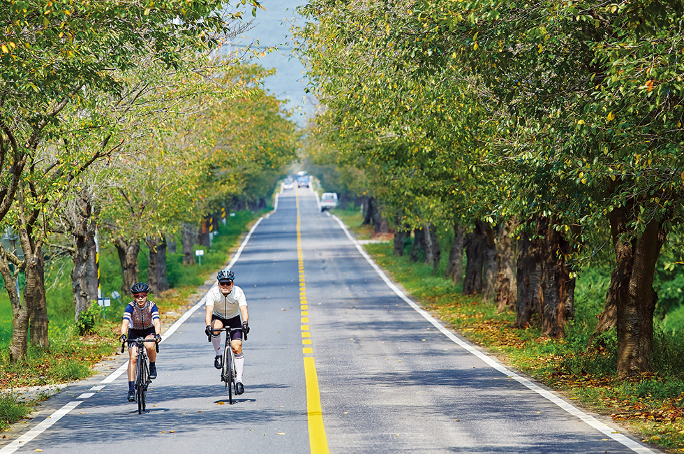
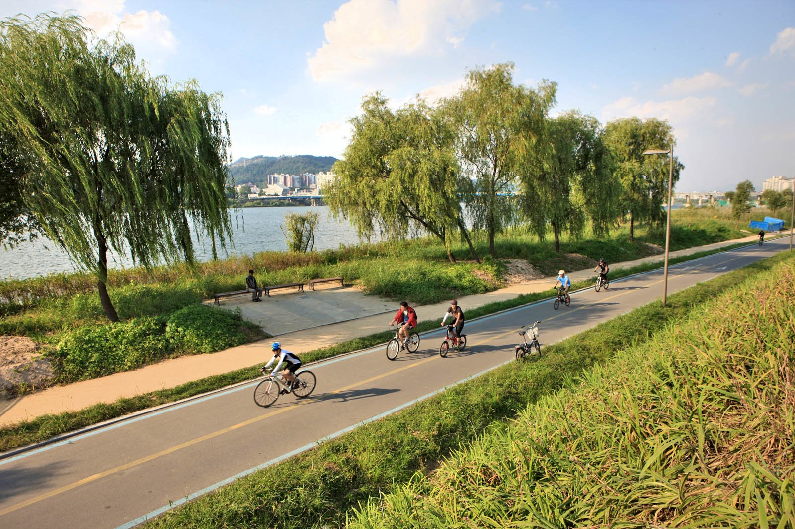

봄날의 따스한 햇살 아래 자전거를 타는 것은 건강에도 이로울 뿐만 아니라
마음까지 상쾌하게 해줍니다. 자전거를 타며 부는 바람은 기분을 상쾌하게
하며, 일상에서 벗어나 새로운 경치와 풍경을 발견할 수 있는 기회를
제공합니다.
자전거를 통해 평소 걸어서는 접근하기 어려운 멋진
장소들을 탐험해보세요. 또한, 다양한 자전거 코스를 따라 달리면서 자연의
아름다움을 감상할 수 있습니다.
자전거를 타며 봄의 벛꽃을 감상하는 영상. 벛꽃이 아름답다.
자전거를 타며 봄의 벛꽃을 감상하는 영상 2
아름다운 배경과 함꼐 자전거를 타는 사진
한강변에서 자전거를 타는 사진
봄은 다양한 꽃들이 만개하는 계절입니다. 벚꽃, 진달래, 개나리 등은 보통
4월에서 5월 사이에 만개하여 봄의 아름다움을 한껏 뽐냅니다. 많은
지역에서는 이 시기에 꽃 축제를 개최하여 봄의 정취를 느낄 수 있는
기회를 제공합니다.
이러한 축제는 연인, 가족, 친구들과 함께
방문하기 좋은 장소로, 아름다운 꽃들 사이에서 멋진 추억을 만들 수
있습니다.
2023 여의도 벛꽃축제 영상 보기
경기도 봄꽃축제
이 밖에도 구글에 봄 꽃축제들을 검색하면 다양한 축제 정보를 얻을 수
있다